DeepfakeDetectionSummary
DeepFake Detection
手机上实时运行的验证技术
| stage | ||
|---|---|---|
| 1 | face detection | 红外深度热成像一般都会有rgb摄像头，所以检测都用 rgb作为输入 |
| 需要支持倾斜角度， 并且做到端侧实时 | ||
| 2 | face ldm | 根据landmark、视线追踪，检测用户的反应是否正常 |
| 3 | Passive Liveness Detection | 静态活体检测， 分类任务 |
| 拉普拉斯方差： 判断图像清晰度 | ||
| 亮度均值、对比度阈值做过滤： 判断图片明亮度 | ||
| 遮挡(戴口罩、手挡脸、头发遮挡 导致特征丢失）： 关键点可见度 判断 | ||
| DoG / Laplacian 取图像高频成份，看是否“过于光滑”或“奇怪的噪声” ，GAN常有 | ||
| 2D FFT 分析 GAN 伪影 | ||
| 检查光照方向是否不合理 | ||
| 2d关键点检测人脸是不是正常人的轮廓弧度等 | ||
| print attack： 纸张反光， 清晰度，颜色分布差异，等 | ||
| replay attack ： 屏幕莫尔纹，清晰度 | ||
| paper cut | ||
| 4 | Challenge-response | 让用户做随机指令，将实时得到landmarks判断是否正常 |
| 比如眨眼、点头、微笑、说数字或跟随虚拟光标 | ||
| 跟随指令检测到的关键点尺寸等数据满不满足3D空间的关系 | ||
| 因为是投影到2d图像上，所以是弱3d | ||
| 5 | face recognition | 1:1 人脸比对 |
| 人脸比对，根据不同的场景设置不同的阈值 | ||
| 6 | 系统级别的 | 手机验证码、银行密码、已经储存的问题等， ip等 |
增强输入： 深度摄像头TOF
一般TOF 会有RGB camera， 所以在上述的基础上可以添加如下：
- 创建用户的3d morphble model， 记录shape 参数
- 人脸验证的时候也要比对3d 模型的
- 录屏、打印等2d 的攻击可以杜绝，
- 可以将检测到的2d关键点投影到3d 深度图中获取准确的3d坐标，来判断是否是2d图片
- 如果可以增加算力，比如本地部署，就可以通过3d 点云回归关键点
深度伪造检测模型
img
专门训练 DeepFake 检测模型
数据集：FaceForensics++、Celeb-DF、DFDC
模型关注 时空一致性、光照、频域特征
video
微表情分析：捕捉自然、短暂的面部肌肉变化 连续帧变化
Face Detection
papers
La: latency
- H: high latency
- L: low latency
- -: according to backbone L: with or not landmark
- Y: with
- N: not
Date model La L compare paper 2016 MTCNN H* Y image pyramid MTCNN P: light weight, N candidates R: refine，其实是选择， N 中选 M(M<N) O: N faces refine and output 如果按照img pyramid 速度肯定慢，否则效果会差一些 2016 SSDface H N ssd model 2017 tiny face H N image pyramid –>merge detection Finding Tiny Faces each pyramid have fixed resolution faces 耗时较多，后世多用于TTA 2017 S3FD - N feature pyramid S3FD 紧凑人脸，外周信息重要性降低 anchor 正方形， 可以被各个stage整除 2018 DSFD H N 当前层和下一层融合，有点FPN的味道了 DSFD 损失根据TF和TP来决定损失（后续被focal loss 替代） double shot mean 耗时高 2018 pyramidbox H N body+head+face detection 解决小目标 pyramidbox CPM 大的感受野来感知周围的相关信息 Pyramid Anchors 2018 FaceBoxes L N 用Inception 来增大感受野 FaceBoxes backbone 用stride减少计算量 libface L Y 于仕琪老师提出的libfacedetection， https://github.com/ShiqiYu/libfacedetection 有点类似demo，效果需要评估 2019 ultraface L N Ultra-Light-Fast-Generic-Face-Detector-1MB 2019 LFFD L N low level ： small face many context LFFD high level: big face little context 2019 CenterFace L Y anchor free, predict center and w h CenterFace 2020 DBFace L Y 深兰设计的 https://github.com/dlunion/DBFace 2019 RetinaFace L Y 训练中添加了3dmesh的监督信息 RetinaFace 这个是关键在自己其他项目中有佐证 yolov5face 原始yolo做不到实时，需要模型轻量化 根据最近的检测效果来看，yolo的检测效果已经相当不错了
compare latency
| test img | latency |
|---|---|
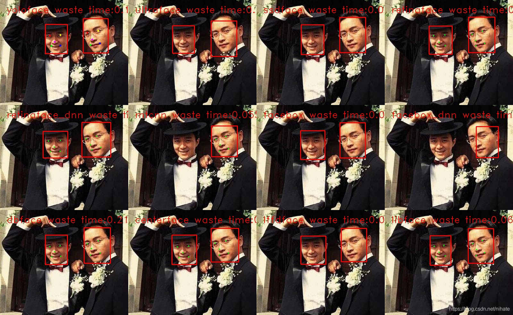 |
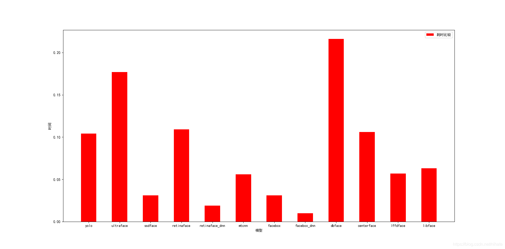 |
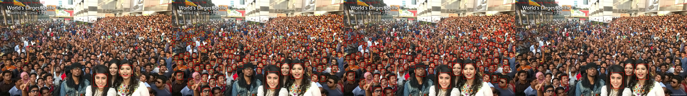 |
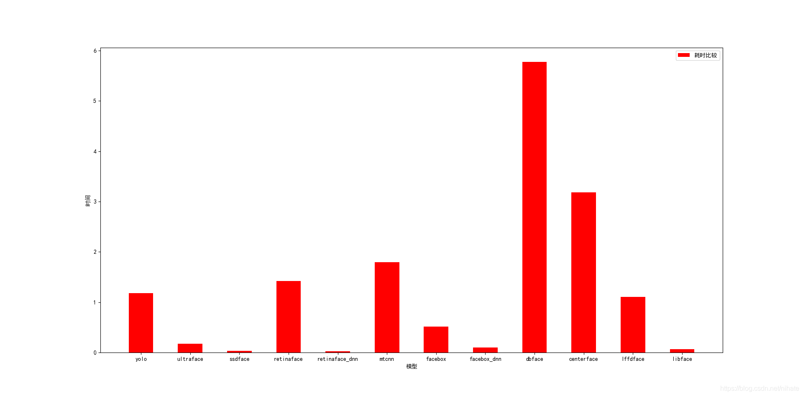 |
Summary
for tiny objects
- image pyramid deprecated, 耗时多
- multi faces retinaface libface
- little faces retinafacelffdface
Face Landmark Detection
这里分为两个思路，1 heatmaps直接回归具体的位置，2heatmaps回归概率分布类似nanodet回归坐标一样
Face rec loss
backbone
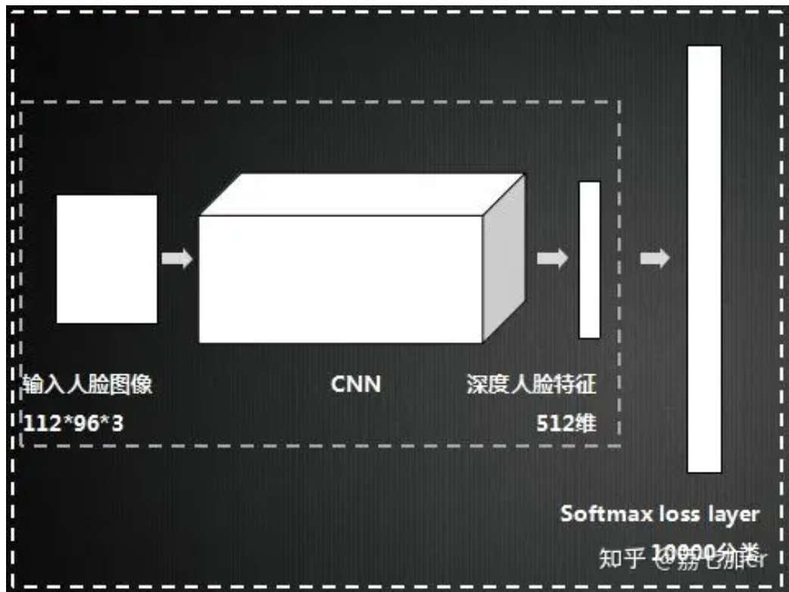
交叉熵损失
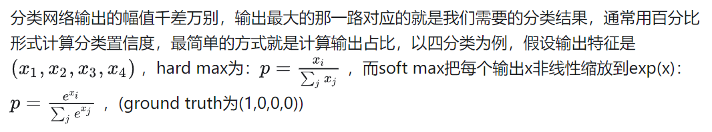
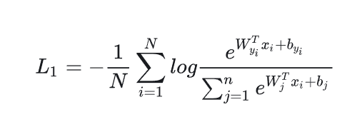
Triplet 三元组损失
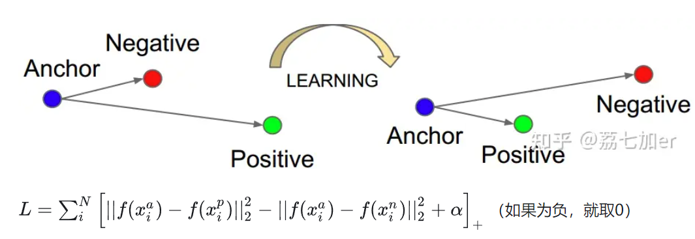
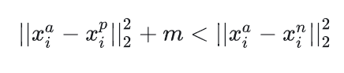
相同的两个人近，不相同的两个人远
L-softmax
出发点如下增大类间距离
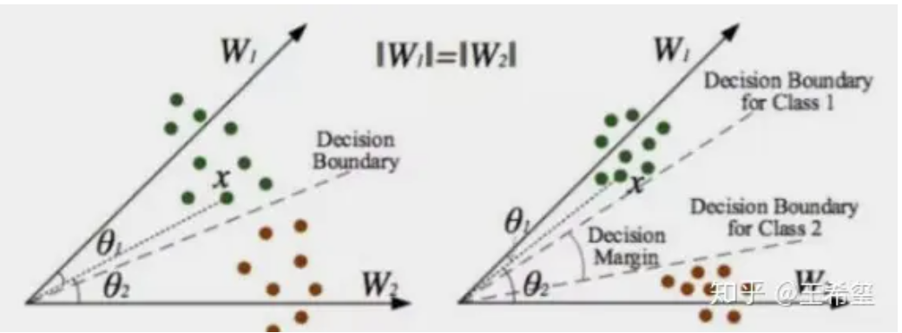
Wyi 就是onehot的表示形式
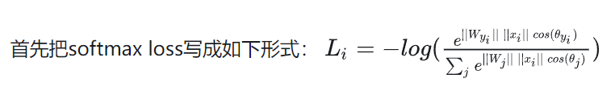
A-softmax（SphereFace）
相比L-softmax，归一化了 Wj
CenterLoss
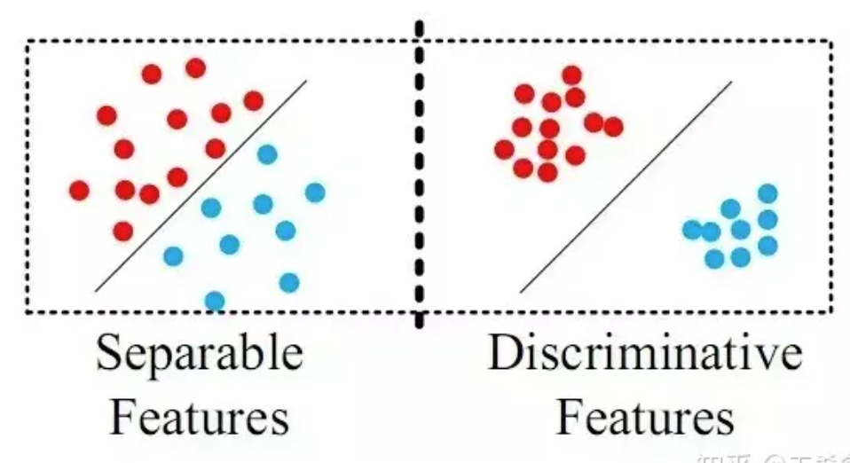
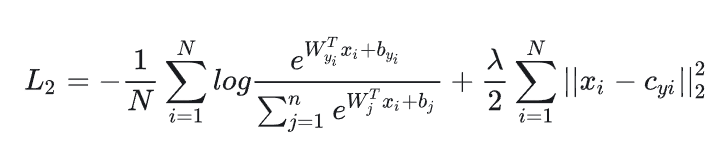
CosFace/AM-softmax
把乘性margin改成了加性margin
ArcFace
是直接在角度空间 中最大化分类界限，而CosFace是在余弦空间 中最大化分类界限
arcface 具体做法
输入 3.8M图片，每个人几十张， 一共85164个人，也就是这么多个类别 img 经过backbone 得到 512的特征向量 feature
feature -> normalize -> ArcModel(fc [512, 85164]) -> 得到cosine -> 再得到sine值 -> cc-ss来增加delta 得到phi -> onehot label 是phi，非label cos
focal loss
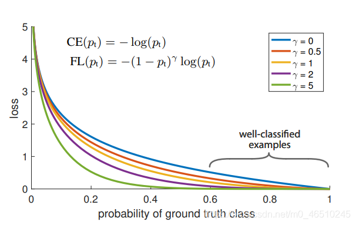
3DMM (3D Morphable Model) DECA
几个先验知识
albedo
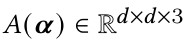
光照模型 Lambert定律
(1)反射强度与观察者的角度没有关系； (2)反射强度与光线的入射角度有关系
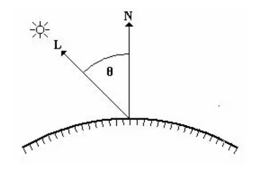
cosθ = dot(N,L) DiffuseLight = Idot(N,L) DiffuseLight = KdI*dot(N,L)
L为入射光线的反向量 N为当前表面的法向量方向 I为入射光的强度 物体对光线的反射系数为Kd
albedo 经过光照
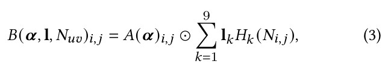
纹理贴图
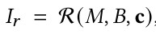
将光照贴到上面去， R 就是渲染函数
pipeline
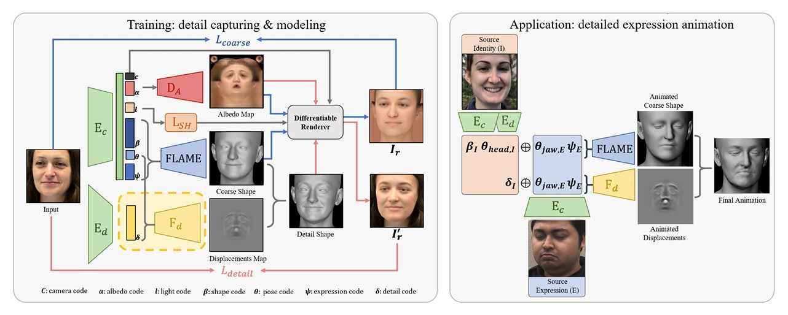
先训练coarseLoss
| loss type | ||
|---|---|---|
| Coarse reconstruction | 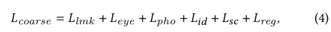 |
|
| 2d landmark loss | 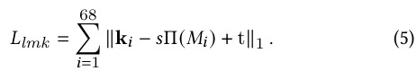 |
相机模型：正交投影。 s，t： 缩放、位移 |
| eye closure loss | 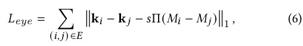 |
： 眼睛闭合程度损失上下眼睑的距离和真实上下眼睑的距离的损失 |
| 像素级别损失 | 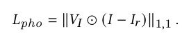 |
面部分割后进行 |
| Identity loss | 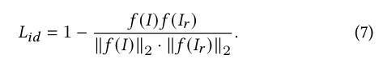 |
这个是余弦距离损失 |
beta 连续性
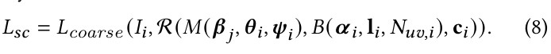
相同人的shape理论上是一样的，所以不同照片相同人可以直接替换， 但是实际上shape会有细小的差别， 这个差别，希望不要引起跳变，所以添加上替换 shape参数的损失
正则项损失
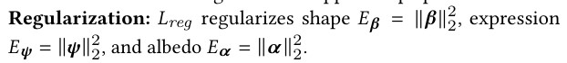
detail
训练编码器 （具有与 相同的架构)对图像 进行编码到128维潜latent code ,表示受试者特定的细节。latent code 与FLAME的expression 和jaw姿势参数 一起并由解码 到 .
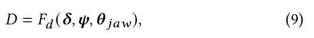
将粗糙重建的M和其表面法向数据N转换到UV空间，并结合D(Displacement Map)数据生成更精细的geometry M’
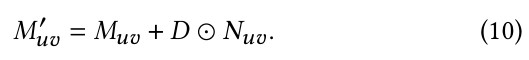
从精细geometry M’,中获取精细的法向数据 N’,将其和原始的geometry M, 一起渲染得到精细图像
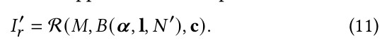
detail loss
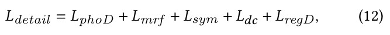
像素级别损失
面部分割后进行
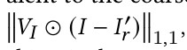
ID-MRF loss
面部分割后进行 采用隐式多样化马尔可夫随机场（ID-MRF）损失来重建几何细节。给定输入图像和细节渲染，ID-MRF损失从预训练网络的不同层提取特征块，然后最小化来自两个图像的对应最近邻特征块之间的差异。不幸的是，这可能会导致对抗性训练过程不稳定。但是，ID-MRF损失将生成的内容正则化为本地补丁级别的原始输入；这鼓励DECA捕捉高频细节。
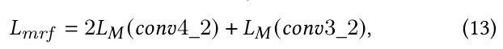
sym
不可见面部部分对称性
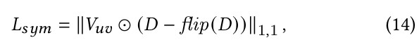
Detail regularization
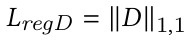
Detail disentanglement
相同的人的细节是一样的， 皱纹、痣等， 所以相同人的不同细节替换后应该一样
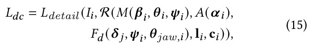
Face Datasets
1.PubFig: Public Figures Face Database(哥伦比亚大学公众人物脸部数据库) 这是哥伦比亚大学的公众人物脸部数据集，包含有200个人的58k+人脸图像，主要用于非限制场景下的人脸识别。
2.Large-scale CelebFaces Attributes (CelebA) Dataset 这是由香港中文大学汤晓鸥教授实验室公布的大型人脸识别数据集。该数据集包含有200K张人脸图片，人脸属性有40多种，主要用于人脸属性的识别。
3.Colorferet 为促进人脸识别算法的研究和实用化，美国国防部的Counterdrug Technology Transfer Program(CTTP)发起了一个人脸识别技术(Face Recognition Technology 简称FERET)工程，它包括了一个通用人脸库以及通用测试标准。到1997年，它已经包含了1000多人的10000多张照片，每个人包括了不同表情，光照，姿态和年龄的照片。
4.Multi-Task Facial Landmark (MTFL) dataset 该数据集包含了将近13000张人脸图片，均采自网络。
5.BioID Face Database - FaceDB 这个数据集包含了1521幅分辨率为384x286像素的灰度图像。 每一幅图像来自于23个不同的测试人员的正面角度的人脸。为了便于做比较，这个数据集也包含了对人脸图像对应的手工标注的人眼位置文件。 图像以 “BioID_xxxx.pgm"的格式命名，其中xxxx代表当前图像的索引(从0开始)。类似的，形如"BioID_xxxx.eye"的文件包含了对应图像中眼睛的位置。
6.Labeled Faces in the Wild Home (LFW) LFW数据集是为了研究非限制环境下的人脸识别问题而建立的。这个数据集包含超过13，000张人脸图像，均采集于Internet。 每个人脸均被标准了一个人名。其中，大约1680个人包含两个以上的人脸。 这个集合被广泛应用于评价Face Verification算法的性能。
7.Person identification in TV series 该数据集所选用的人脸照片均来自于两部比较知名的电视剧，《吸血鬼猎人巴菲》和《生活大爆炸》。
8.CMUVASC & PIE Face dataset CMU PIE人脸库建立于2000年11月，它包括来自68个人的40000张照片，其中包括了每个人的13种姿态条件，43种光照条件和4种表情下的照片，现有的多姿态人脸识别的文献基本上都是在CMU PIE人脸库上测试的。
9.YouTube Faces YouTube Video Faces是用来做人脸验证的。在这个数据集下，算法需要判断两段视频里面是不是同一个人。有不少在照片上有效的方法，在视频上未必有效/高效。
10.CASIA-FaceV5 该数据集包含了来自500个人的2500张亚洲人脸图片.
11.The CNBC Face Database 该数据集采集了200个人在不同状态下（不同的神情，装扮，发型等）的人脸照片。
12.CASIA-3D FaceV1 该数据集包含了来自123个人的4624张人脸图片，所有图片均由下图的仪器进行拍摄。
13.IMDB-WIKI IMDB-WIKI人脸数据库是有IMDB数据库和Wikipedia数据库组成，其中IMDB人脸数据库包含了460,723张人脸图片，而Wikipedia人脸数据库包含了62,328张人脸数据库，总共523,051张人脸数据库，IMDB-WIKI人脸数据库中的每张图片都被标注了人的年龄和性别，对于年龄识别和性别识别的研究有着重要的意义。
14.FDDB FDDB是UMass的数据集，被用来做人脸检测(Face Detection)。这个数据集比较大，比较有挑战性。而且作者提供了程序用来评估检测结果，所以在这个数据上面比较算法也相对公平。
15.Caltech人脸数据库 10k+人脸，提供双眼和嘴巴的坐标位置
16.The Japanese Female Facial Expression (JAFFE) Database 该数据库是由10位日本女性在实验环境下根据指示做出各种表情，再由照相机拍摄获取的人脸表情图像。整个数据库一共有213张图像，10个人，全部都是女性，每个人做出7种表情，这7种表情分别是： sad, happy, angry, disgust, surprise, fear, neutral. 每个人为一组，每一组都含有7种表情，每种表情大概有3,4张样图。